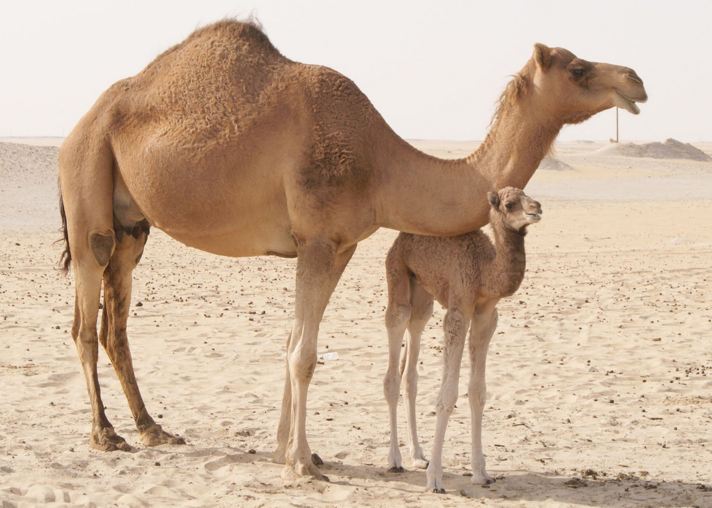

Түйе
Түйелер шөлге де, қатты аязға да төзімді, күшті көлік малы. Мұның екі түрі бар: қос өркешті түйе (Бактрия түйесі) — негізгі өсірілетін жерлері: Қазақстан, Қырғызстан, Өзбекстан, Астрахан, Сталинград, Саратов және Чита облыстары, бұрынғы КСРО-да мұның Астрахан түйесі, Қазақстан түйесі, моңғол түйесі деп аталатын негізгі үш тұқымы өсіріледі; бір өркешті түйе (дромедар), — Түрікменстанда, көбінесе Тәжікстанда, Өзбекстанның оңтүстік аудандарында және Қазақстанның кейбір жерлерінде өсіріледі. Ең көп өсірілетін жері — Қарақұм. Қоспақ түрлеріне, пайдалануына, қанына қарай: аруана, желмая, нар деп аталады. Түйенің еті мол, жүні биязы болады.
.jpg)
Түйе ежелден шөлді-тұзды аймақтардың табиғат жағдайларына жақсы бейімделген, аптап ыстықтарда апта бойына сусыз тіршілік ете алатын бірден-бір түлік. Соған қарамастан оларды жазда күніне 2 рет, қыста 1 рет суару қажет, тұзды-кермек суды жақсы ішеді. Қолайсыз табиғат жағдайларында азық ретінде пайдалану үшін өркешіне артық май жиналады. Кеудесіндегі, табандарындағы, шынтағындағы, тізесіндегі қажау сүйелдерінің арқасында ыстық жерде, құмда жата алады. Түйенің тағы бір биол. ерекшелігі – қыста қолда бағуды, сапалы азықтандыруды және жылы қораны керек етпейді. Бірақ Түйелер жүні қырқылған алғашқы аптада өкпек жел мен жоғары ылғалдылыққа төзімсіз, осы мезгілде олардың жауын-шашын мен суыққа ұрынбауын қамтамасыз ету керек.

Қос өркешті қазақ Түйелері дене бітімдерінің ерекшеліктері, ірілігі, өнімділігі бойынша 3 тұқымдық типке бөлінеді: оралбөкей, Қызылорда және оңтүстік Қазақстан Түйелері. Орал-бөкей типінің басқаларынан тірілей салмағы мен жүн өнімділігі 5 – 10%-ға жоғары болғандықтан, асылдандыру жұмыстарында тұқым жақсартушы ретінде пайдаланылып келеді. Дара және қос өркешті Түйелерді бір-бірімен будандастырудан алынған будандар дене бітімінің беріктігі, ірілігі, қоршаған ортаның қолайсыз жағдайлары мен ауыр жұмысқа төзімділігі бойынша таза тұқымды Түйеден айтарлықтай ерекшеленеді. Тірілей салмағы бойынша артықшылығы 20 – 25%-ға дейін жетеді. Будандардың үлектерін нар, інгендерін мая деп атайды. Нарлар тек жұмыс күші мен өнім алу үшін пайдаланылып, жұптастыруға жіберілмейді. Маялар әдетте қос өркешті үлектермен шағылыстырылып, аталық тұқымға ұқсас ұрпақ алынады. Түраралық будандастыру тек таза қанды дара және қос өркешті Түйелер пайдаланылғанда ғана жақсы нәтиже беретіндігі, будандардың асыл тұқымды мал ретінде маңыздылығы жоқ екендігі ескерілуі қажет.
Түйенің сүті, еті, жүні пайдаланылады. Сүтінен емдік қасиеті бар шұбат, май, сыр, дайындалса, еті тағамға қолданылады, ал жүнінің 85%-ы таза, өте бағалы түбіт.